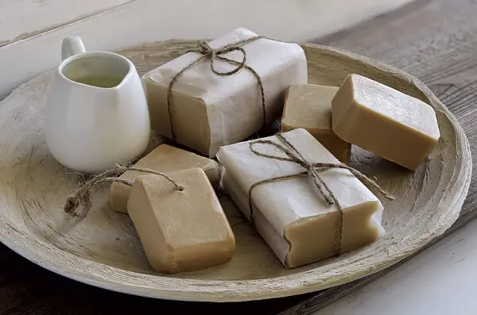

Sabão Caseiro
O QUE É SABÃO CASEIRO?
➜ Além de ser muito mais barato, o sabão caseiro é um produto que pode ser considerado biodegradável, já que boa parte das receitas reaproveitam o óleo de cozinha utilizado em frituras, evitando que sejam descartados incorretamente no meio ambiente.
➜ O sabão da bg é um produto de alta qualidade para proporcionar uma limpeza eficiente e delicada
➜ O sabãoo da bg é produzido por nossa empresa comprometida a sustentabilidade, utilizando ingredientes e embalagens biodegradável
Informações de Venda
➜ Local: Colegio Estadual Santa Cândida
➜ Pagamentos: Dinheiro e PIX (não vendemos fiado)
➜ Encomendas: Instragram (@sabão.da.bg) WhastApp (41) 98425-0312
➜ Envios: Via uber com taxa de entrega, se for para aluno do nosso colegio entregamos na sala e sem cobrança de taxa
